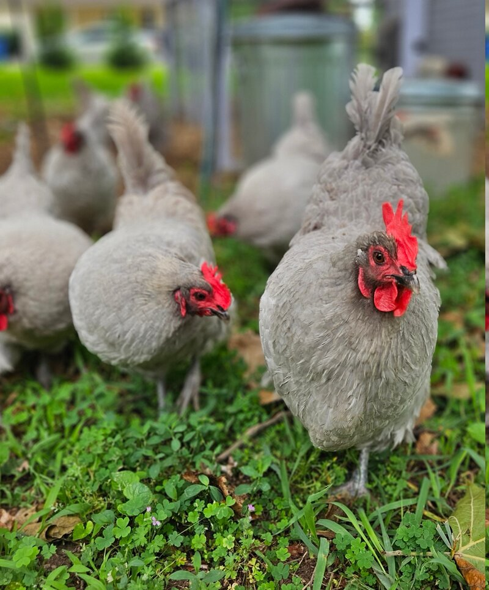

The chicken-keeping world can make it sound like you need an engineering degree, a heated coop, and a dozen gadgets. You don't. Chickens have been living alongside people for thousands of years without any of that. The simpler your setup, the fewer things there are to break, leak, jam, or stress about.

Three things trip up most new chicken keepers. Get these right and the rest is just five minutes a day.
1. Skip the wood floor
A dirt floor coop is simpler, healthier, and easier to manage than a wooden floor. Wood floors trap moisture, harbor mites, and need to be scraped clean. A dirt floor drains naturally and lets you build up bedding without worrying about rot.
If your coop already has a wood floor, it's fine — just keep the bedding deep and dry, and check the corners for damp spots. But if you're building from scratch, leave the floor out. The ground underneath the coop is the best floor you'll get.
2. Use deep litter — don't scrape and replace
The deep litter method works like the forest floor. Instead of scraping out old bedding and replacing it every week, you add fresh bedding on top. The lower layers slowly compost in place, generating a small amount of heat and keeping the coop floor dry. A well-managed deep litter coop smells earthy, not like ammonia.
Here's how to do it:
- Start with four to six inches of bedding. Pine shavings work best — they're absorbent and break down well. Straw is fine too.
- Turn it lightly once a week. Use a pitchfork or rake to stir the top layer. This keeps it aerated and prevents matting.
- Add fresh bedding on top as needed. When the surface looks soiled, scatter a fresh layer of shavings. With four to six birds, every two to four weeks is typical.
- Full clean-out once or twice a year. In spring and maybe fall, shovel everything out. What you get is partially composted material — excellent for gardens and flower beds after a few more months of aging.
3. Flat roosting bars — not round perches
This one surprises people. A chicken's foot isn't built to grip a round perch like a parrot. Their feet are flat and wide — meant to rest on the ground or a broad surface. When you give them a round dowel, their toes curl around it all night. Over time this can lead to bumblefoot, pressure sores, and cold toes in winter because they can't tuck their feet up under their feathers.
The fix takes two minutes and a scrap of lumber: use a 2×4 with the wide side up as the roosting bar. Birds can sit flat-footed, their toes spread naturally, and in cold weather they settle down and cover their feet completely with their belly feathers. No frostbite. No foot problems.
Mount roosts eighteen to twenty-four inches off the ground, on the opposite side of the coop from the nest boxes so they don't sleep where they lay. Allow about ten inches of roost length per bird.
The things you genuinely don't need
No heat lamp. Heat lamps are a fire risk — coop fires from heat lamps kill more chickens than cold ever does. If you chose cold-hardy breeds, their feathers trap an insulating layer of warm air close to the body. As long as the coop is dry and draft-free, they're fine well below freezing.
No automatic door. Electric coop doors sound great until they jam. The track ices up, the timer drifts, the battery dies. Walking out in the morning to open the door and in the evening to close it takes one minute. It never jams. It never fails silently while your birds are locked out at dusk.
Predator proofing does matter, though. Use hardware cloth, not chicken wire — a raccoon can tear through chicken wire. Bury it twelve inches deep around the run perimeter to stop digging predators. Use carabiners or two-step latches that raccoons can't figure out. And close the coop every night. That's the single most important defense.
The full Easy Chicken Keeping Guide covers how to choose the right breed for your climate (with a detailed breed comparison table), the complete daily five-minute care routine, winter management without electricity, feed and water systems that don't fail silently, a predator-proofing checklist, seasonal care reminders, a tear-out quick reference card, and flock journal pages.
Easy Chicken Keeping Guide on Etsy →